#1089: [HI] Duplicate Deaths (confirmed + probable) timeseries to Deaths (confirmed)
Issue number 1089
hmhoffman opened this issue on February 5, 2021, 8:07 AM PST
State: HI
Dates affected: 04/01/20 - 02/04/21
Describe the issue: On February 3, 2021, we learned via outreach that Hawaii's "Total fatalities" include only covid confirmed deaths which are confirmed through PCR testing. As a result, we are able to capture Deaths (confirmed) for Hawaii, and are duplicating our Deaths (confirmed + probable) timeseries to Deaths (confirmed), as only confirmed deaths are included.
Comments
#1089: [HI] Duplicate Deaths (confirmed + probable) timeseries to Deaths (confirmed)
Issue number 1089
hmhoffman opened this issue on February 5, 2021, 8:07 AM PST
State: HI
Dates affected: 04/01/20 - 02/04/21
Describe the issue: On February 3, 2021, we learned via outreach that Hawaii's "Total fatalities" include only covid confirmed deaths which are confirmed through PCR testing. As a result, we are able to capture Deaths (confirmed) for Hawaii, and are duplicating our Deaths (confirmed + probable) timeseries to Deaths (confirmed), as only confirmed deaths are included.
Comments
Rows edited: 310 HI 2021-02-04 deathConfirmed: 416 (was None) HI 2021-02-03 deathConfirmed: 414 (was None) HI 2021-02-02 deathConfirmed: 410 (was None) HI 2021-02-01 deathConfirmed: 410 (was None) HI 2021-01-31 deathConfirmed: 410 (was None) HI 2021-01-30 deathConfirmed: 407 (was None) HI 2021-01-29 deathConfirmed: 407 (was None) HI 2021-01-28 deathConfirmed: 406 (was None) HI 2021-01-27 deathConfirmed: 404 (was None) HI 2021-01-26 deathConfirmed: 401 (was None) HI 2021-01-25 deathConfirmed: 342 (was None) HI 2021-01-24 deathConfirmed: 342 (was None) HI 2021-01-23 deathConfirmed: 336 (was None) HI 2021-01-22 deathConfirmed: 332 (was None) HI 2021-01-21 deathConfirmed: 328 (was None) HI 2021-01-20 deathConfirmed: 325 (was None) HI 2021-01-19 deathConfirmed: 324 (was None) HI 2021-01-18 deathConfirmed: 322 (was None) HI 2021-01-17 deathConfirmed: 322 (was None) HI 2021-01-16 deathConfirmed: 320 (was None) HI 2021-01-15 deathConfirmed: 318 (was None) HI 2021-01-14 deathConfirmed: 318 (was None) HI 2021-01-13 deathConfirmed: 312 (was None) HI 2021-01-12 deathConfirmed: 309 (was None) HI 2021-01-11 deathConfirmed: 309 (was None) HI 2021-01-10 deathConfirmed: 309 (was None) HI 2021-01-09 deathConfirmed: 307 (was None) HI 2021-01-08 deathConfirmed: 303 (was None) HI 2021-01-07 deathConfirmed: 299 (was None) HI 2021-01-06 deathConfirmed: 299 (was None) HI 2021-01-05 deathConfirmed: 289 (was None) HI 2021-01-04 deathConfirmed: 289 (was None) HI 2021-01-03 deathConfirmed: 289 (was None) HI 2021-01-02 deathConfirmed: 289 (was None) HI 2021-01-01 deathConfirmed: 289 (was None) HI 2020-12-31 deathConfirmed: 288 (was None) HI 2020-12-30 deathConfirmed: 285 (was None) HI 2020-12-29 deathConfirmed: 285 (was None) HI 2020-12-28 deathConfirmed: 285 (was None) HI 2020-12-27 deathConfirmed: 285 (was None) HI 2020-12-26 deathConfirmed: 285 (was None) HI 2020-12-25 deathConfirmed: 285 (was None) HI 2020-12-24 deathConfirmed: 285 (was None) HI 2020-12-23 deathConfirmed: 285 (was None) HI 2020-12-22 deathConfirmed: 282 (was None) HI 2020-12-21 deathConfirmed: 282 (was None) HI 2020-12-20 deathConfirmed: 282 (was None) HI 2020-12-19 deathConfirmed: 281 (was None) HI 2020-12-18 deathConfirmed: 281 (was None) HI 2020-12-17 deathConfirmed: 280 (was None) HI 2020-12-16 deathConfirmed: 278 (was None) HI 2020-12-15 deathConfirmed: 274 (was None) HI 2020-12-14 deathConfirmed: 274 (was None) HI 2020-12-13 deathConfirmed: 274 (was None) HI 2020-12-12 deathConfirmed: 271 (was None) HI 2020-12-11 deathConfirmed: 269 (was None) HI 2020-12-10 deathConfirmed: 268 (was None) HI 2020-12-09 deathConfirmed: 266 (was None) HI 2020-12-08 deathConfirmed: 262 (was None) HI 2020-12-07 deathConfirmed: 262 (was None) HI 2020-12-06 deathConfirmed: 262 (was None) HI 2020-12-05 deathConfirmed: 261 (was None) HI 2020-12-04 deathConfirmed: 256 (was None) HI 2020-12-03 deathConfirmed: 246 (was None) HI 2020-12-02 deathConfirmed: 244 (was None) HI 2020-12-01 deathConfirmed: 244 (was None) HI 2020-11-30 deathConfirmed: 244 (was None) HI 2020-11-29 deathConfirmed: 244 (was None) HI 2020-11-28 deathConfirmed: 240 (was None) HI 2020-11-27 deathConfirmed: 240 (was None) HI 2020-11-26 deathConfirmed: 237 (was None) HI 2020-11-25 deathConfirmed: 235 (was None) HI 2020-11-24 deathConfirmed: 233 (was None) HI 2020-11-23 deathConfirmed: 233 (was None) HI 2020-11-22 deathConfirmed: 233 (was None) HI 2020-11-21 deathConfirmed: 231 (was None) HI 2020-11-20 deathConfirmed: 224 (was None) HI 2020-11-19 deathConfirmed: 223 (was None) HI 2020-11-18 deathConfirmed: 223 (was None) HI 2020-11-17 deathConfirmed: 222 (was None) HI 2020-11-16 deathConfirmed: 222 (was None) HI 2020-11-15 deathConfirmed: 222 (was None) HI 2020-11-14 deathConfirmed: 222 (was None) HI 2020-11-13 deathConfirmed: 222 (was None) HI 2020-11-12 deathConfirmed: 222 (was None) HI 2020-11-11 deathConfirmed: 222 (was None) HI 2020-11-10 deathConfirmed: 221 (was None) HI 2020-11-09 deathConfirmed: 221 (was None) HI 2020-11-08 deathConfirmed: 220 (was None) HI 2020-11-07 deathConfirmed: 219 (was None) HI 2020-11-06 deathConfirmed: 219 (was None) HI 2020-11-05 deathConfirmed: 219 (was None) HI 2020-11-04 deathConfirmed: 219 (was None) HI 2020-11-03 deathConfirmed: 219 (was None) HI 2020-11-02 deathConfirmed: 219 (was None) HI 2020-11-01 deathConfirmed: 219 (was None) HI 2020-10-31 deathConfirmed: 216 (was None) HI 2020-10-30 deathConfirmed: 215 (was None) HI 2020-10-29 deathConfirmed: 213 (was None) HI 2020-10-28 deathConfirmed: 215 (was None) HI 2020-10-27 deathConfirmed: 212 (was None) HI 2020-10-26 deathConfirmed: 212 (was None) HI 2020-10-25 deathConfirmed: 212 (was None) HI 2020-10-24 deathConfirmed: 209 (was None) HI 2020-10-23 deathConfirmed: 206 (was None) HI 2020-10-22 deathConfirmed: 203 (was None) HI 2020-10-21 deathConfirmed: 189 (was None) HI 2020-10-20 deathConfirmed: 187 (was None) HI 2020-10-19 deathConfirmed: 187 (was None) HI 2020-10-18 deathConfirmed: 186 (was None) HI 2020-10-17 deathConfirmed: 185 (was None) HI 2020-10-16 deathConfirmed: 184 (was None) HI 2020-10-15 deathConfirmed: 183 (was None) HI 2020-10-14 deathConfirmed: 173 (was None) HI 2020-10-13 deathConfirmed: 169 (was None) HI 2020-10-12 deathConfirmed: 169 (was None) HI 2020-10-11 deathConfirmed: 168 (was None) HI 2020-10-10 deathConfirmed: 166 (was None) HI 2020-10-09 deathConfirmed: 164 (was None) HI 2020-10-08 deathConfirmed: 163 (was None) HI 2020-10-07 deathConfirmed: 160 (was None) HI 2020-10-06 deathConfirmed: 157 (was None) HI 2020-10-05 deathConfirmed: 156 (was None) HI 2020-10-04 deathConfirmed: 153 (was None) HI 2020-10-03 deathConfirmed: 142 (was None) HI 2020-10-02 deathConfirmed: 139 (was None) HI 2020-10-01 deathConfirmed: 136 (was None) HI 2020-09-30 deathConfirmed: 132 (was None) HI 2020-09-29 deathConfirmed: 132 (was None) HI 2020-09-28 deathConfirmed: 132 (was None) HI 2020-09-27 deathConfirmed: 131 (was None) HI 2020-09-26 deathConfirmed: 127 (was None) HI 2020-09-25 deathConfirmed: 124 (was None) HI 2020-09-24 deathConfirmed: 122 (was None) HI 2020-09-23 deathConfirmed: 120 (was None) HI 2020-09-22 deathConfirmed: 120 (was None) HI 2020-09-21 deathConfirmed: 120 (was None) HI 2020-09-20 deathConfirmed: 120 (was None) HI 2020-09-19 deathConfirmed: 120 (was None) HI 2020-09-18 deathConfirmed: 107 (was None) HI 2020-09-17 deathConfirmed: 103 (was None) HI 2020-09-16 deathConfirmed: 100 (was None) HI 2020-09-15 deathConfirmed: 99 (was None) HI 2020-09-14 deathConfirmed: 99 (was None) HI 2020-09-13 deathConfirmed: 97 (was None) HI 2020-09-12 deathConfirmed: 96 (was None) HI 2020-09-11 deathConfirmed: 94 (was None) HI 2020-09-10 deathConfirmed: 91 (was None) HI 2020-09-09 deathConfirmed: 88 (was None) HI 2020-09-08 deathConfirmed: 86 (was None) HI 2020-09-07 deathConfirmed: 85 (was None) HI 2020-09-06 deathConfirmed: 84 (was None) HI 2020-09-05 deathConfirmed: 81 (was None) HI 2020-09-04 deathConfirmed: 79 (was None) HI 2020-09-03 deathConfirmed: 75 (was None) HI 2020-09-02 deathConfirmed: 74 (was None) HI 2020-09-01 deathConfirmed: 70 (was None) HI 2020-08-31 deathConfirmed: 63 (was None) HI 2020-08-30 deathConfirmed: 62 (was None) HI 2020-08-29 deathConfirmed: 59 (was None) HI 2020-08-28 deathConfirmed: 55 (was None) HI 2020-08-27 deathConfirmed: 51 (was None) HI 2020-08-26 deathConfirmed: 49 (was None) HI 2020-08-25 deathConfirmed: 49 (was None) HI 2020-08-24 deathConfirmed: 47 (was None) HI 2020-08-23 deathConfirmed: 47 (was None) HI 2020-08-22 deathConfirmed: 46 (was None) HI 2020-08-21 deathConfirmed: 45 (was None) HI 2020-08-20 deathConfirmed: 45 (was None) HI 2020-08-19 deathConfirmed: 42 (was None) HI 2020-08-18 deathConfirmed: 40 (was None) HI 2020-08-17 deathConfirmed: 40 (was None) HI 2020-08-16 deathConfirmed: 40 (was None) HI 2020-08-15 deathConfirmed: 40 (was None) HI 2020-08-14 deathConfirmed: 40 (was None) HI 2020-08-13 deathConfirmed: 40 (was None) HI 2020-08-12 deathConfirmed: 38 (was None) HI 2020-08-11 deathConfirmed: 34 (was None) HI 2020-08-10 deathConfirmed: 31 (was None) HI 2020-08-09 deathConfirmed: 31 (was None) HI 2020-08-08 deathConfirmed: 31 (was None) HI 2020-08-07 deathConfirmed: 29 (was None) HI 2020-08-06 deathConfirmed: 27 (was None) HI 2020-08-05 deathConfirmed: 27 (was None) HI 2020-08-04 deathConfirmed: 26 (was None) HI 2020-08-03 deathConfirmed: 26 (was None) HI 2020-08-02 deathConfirmed: 26 (was None) HI 2020-08-01 deathConfirmed: 26 (was None) HI 2020-07-31 deathConfirmed: 26 (was None) HI 2020-07-30 deathConfirmed: 26 (was None) HI 2020-07-29 deathConfirmed: 26 (was None) HI 2020-07-28 deathConfirmed: 26 (was None) HI 2020-07-27 deathConfirmed: 26 (was None) HI 2020-07-26 deathConfirmed: 26 (was None) HI 2020-07-25 deathConfirmed: 26 (was None) HI 2020-07-24 deathConfirmed: 26 (was None) HI 2020-07-23 deathConfirmed: 25 (was None) HI 2020-07-22 deathConfirmed: 24 (was None) HI 2020-07-21 deathConfirmed: 24 (was None) HI 2020-07-20 deathConfirmed: 24 (was None) HI 2020-07-19 deathConfirmed: 24 (was None) HI 2020-07-18 deathConfirmed: 23 (was None) HI 2020-07-17 deathConfirmed: 22 (was None) HI 2020-07-16 deathConfirmed: 22 (was None) HI 2020-07-15 deathConfirmed: 22 (was None) HI 2020-07-14 deathConfirmed: 22 (was None) HI 2020-07-13 deathConfirmed: 19 (was None) HI 2020-07-12 deathConfirmed: 19 (was None) HI 2020-07-11 deathConfirmed: 19 (was None) HI 2020-07-10 deathConfirmed: 19 (was None) HI 2020-07-09 deathConfirmed: 19 (was None) HI 2020-07-08 deathConfirmed: 19 (was None) HI 2020-07-07 deathConfirmed: 19 (was None) HI 2020-07-06 deathConfirmed: 19 (was None) HI 2020-07-05 deathConfirmed: 19 (was None) HI 2020-07-04 deathConfirmed: 19 (was None) HI 2020-07-03 deathConfirmed: 18 (was None) HI 2020-07-02 deathConfirmed: 18 (was None) HI 2020-07-01 deathConfirmed: 18 (was None) HI 2020-06-30 deathConfirmed: 18 (was None) HI 2020-06-29 deathConfirmed: 18 (was None) HI 2020-06-28 deathConfirmed: 18 (was None) HI 2020-06-27 deathConfirmed: 17 (was None) HI 2020-06-26 deathConfirmed: 17 (was None) HI 2020-06-25 deathConfirmed: 17 (was None) HI 2020-06-24 deathConfirmed: 17 (was None) HI 2020-06-23 deathConfirmed: 17 (was None) HI 2020-06-22 deathConfirmed: 17 (was None) HI 2020-06-21 deathConfirmed: 17 (was None) HI 2020-06-20 deathConfirmed: 17 (was None) HI 2020-06-19 deathConfirmed: 17 (was None) HI 2020-06-18 deathConfirmed: 17 (was None) HI 2020-06-17 deathConfirmed: 17 (was None) HI 2020-06-16 deathConfirmed: 17 (was None) HI 2020-06-15 deathConfirmed: 17 (was None) HI 2020-06-14 deathConfirmed: 17 (was None) HI 2020-06-13 deathConfirmed: 17 (was None) HI 2020-06-12 deathConfirmed: 17 (was None) HI 2020-06-11 deathConfirmed: 17 (was None) HI 2020-06-10 deathConfirmed: 17 (was None) HI 2020-06-09 deathConfirmed: 17 (was None) HI 2020-06-08 deathConfirmed: 17 (was None) HI 2020-06-07 deathConfirmed: 17 (was None) HI 2020-06-06 deathConfirmed: 17 (was None) HI 2020-06-05 deathConfirmed: 17 (was None) HI 2020-06-04 deathConfirmed: 17 (was None) HI 2020-06-03 deathConfirmed: 17 (was None) HI 2020-06-02 deathConfirmed: 17 (was None) HI 2020-06-01 deathConfirmed: 17 (was None) HI 2020-05-31 deathConfirmed: 17 (was None) HI 2020-05-30 deathConfirmed: 17 (was None) HI 2020-05-29 deathConfirmed: 17 (was None) HI 2020-05-28 deathConfirmed: 17 (was None) HI 2020-05-27 deathConfirmed: 17 (was None) HI 2020-05-26 deathConfirmed: 17 (was None) HI 2020-05-25 deathConfirmed: 17 (was None) HI 2020-05-24 deathConfirmed: 17 (was None) HI 2020-05-23 deathConfirmed: 17 (was None) HI 2020-05-22 deathConfirmed: 17 (was None) HI 2020-05-21 deathConfirmed: 17 (was None) HI 2020-05-20 deathConfirmed: 17 (was None) HI 2020-05-19 deathConfirmed: 17 (was None) HI 2020-05-18 deathConfirmed: 17 (was None) HI 2020-05-17 deathConfirmed: 17 (was None) HI 2020-05-16 deathConfirmed: 17 (was None) HI 2020-05-15 deathConfirmed: 17 (was None) HI 2020-05-14 deathConfirmed: 17 (was None) HI 2020-05-13 deathConfirmed: 17 (was None) HI 2020-05-12 deathConfirmed: 17 (was None) HI 2020-05-11 deathConfirmed: 17 (was None) HI 2020-05-10 deathConfirmed: 17 (was None) HI 2020-05-09 deathConfirmed: 17 (was None) HI 2020-05-08 deathConfirmed: 17 (was None) HI 2020-05-07 deathConfirmed: 17 (was None) HI 2020-05-06 deathConfirmed: 17 (was None) HI 2020-05-05 deathConfirmed: 17 (was None) HI 2020-05-04 deathConfirmed: 17 (was None) HI 2020-05-03 deathConfirmed: 16 (was None) HI 2020-05-02 deathConfirmed: 16 (was None) HI 2020-05-01 deathConfirmed: 16 (was None) HI 2020-04-30 deathConfirmed: 16 (was None) HI 2020-04-29 deathConfirmed: 16 (was None) HI 2020-04-28 deathConfirmed: 16 (was None) HI 2020-04-27 deathConfirmed: 14 (was None) HI 2020-04-26 deathConfirmed: 14 (was None) HI 2020-04-25 deathConfirmed: 13 (was None) HI 2020-04-24 deathConfirmed: 12 (was None) HI 2020-04-23 deathConfirmed: 12 (was None) HI 2020-04-22 deathConfirmed: 12 (was None) HI 2020-04-21 deathConfirmed: 10 (was None) HI 2020-04-20 deathConfirmed: 10 (was None) HI 2020-04-19 deathConfirmed: 9 (was None) HI 2020-04-18 deathConfirmed: 9 (was None) HI 2020-04-17 deathConfirmed: 9 (was None) HI 2020-04-16 deathConfirmed: 9 (was None) HI 2020-04-15 deathConfirmed: 9 (was None) HI 2020-04-14 deathConfirmed: 9 (was None) HI 2020-04-13 deathConfirmed: 9 (was None) HI 2020-04-12 deathConfirmed: 8 (was None) HI 2020-04-11 deathConfirmed: 8 (was None) HI 2020-04-10 deathConfirmed: 6 (was None) HI 2020-04-09 deathConfirmed: 5 (was None) HI 2020-04-08 deathConfirmed: 5 (was None) HI 2020-04-07 deathConfirmed: 5 (was None) HI 2020-04-06 deathConfirmed: 4 (was None) HI 2020-04-05 deathConfirmed: 4 (was None) HI 2020-04-04 deathConfirmed: 3 (was None) HI 2020-04-03 deathConfirmed: 2 (was None) HI 2020-04-02 deathConfirmed: 1 (was None) HI 2020-04-01 deathConfirmed: 1 (was None)
#1072: [HI] Remove values carried over after Hawaii stopped reporting Recovered on 11/6/2020
Issue number 1072
jaclyde opened this issue on January 19, 2021, 5:24 PM PST
Labels Data quality
State: Hawaii
Issue: On November 6, 2020, Hawaii removed the Recovered metric from their dashboards. We carried over the last available value, but the metric has not returned, so the value is out of date and potentially confusing. We will be keeping the time series as provided by the state, but removing the carried over values from November 6, 2020, forward.
Comments
- [x] make GH issue
- [x] double check the metrics aren't being reported somewhere by the state
- [x] remove carried over values
- [x] null out source notes
- [x] null out WS2 values
add chart annotationno chart annotation added because we don't have a chart with this metric - [x] add public note
Values Removed: Changes (1).txt
#1072: [HI] Remove values carried over after Hawaii stopped reporting Recovered on 11/6/2020
Issue number 1072
jaclyde opened this issue on January 19, 2021, 5:24 PM PST
Labels Data quality
State: Hawaii
Issue: On November 6, 2020, Hawaii removed the Recovered metric from their dashboards. We carried over the last available value, but the metric has not returned, so the value is out of date and potentially confusing. We will be keeping the time series as provided by the state, but removing the carried over values from November 6, 2020, forward.
Comments
- [x] make GH issue
- [x] double check the metrics aren't being reported somewhere by the state
- [x] remove carried over values
- [x] null out source notes
- [x] null out WS2 values
add chart annotationno chart annotation added because we don't have a chart with this metric - [x] add public note
Values Removed: Changes (1).txt
#1065: [HI] Remove values carried over after Hawaii stopped reporting Total Tests (people) and Total test (specimens) on 10/7
Issue number 1065
jaclyde opened this issue on January 13, 2021, 10:17 PM PST
Labels Data quality not stale
State: Hawaii
Issue: On October 7, 2020, Hawaii removed the Total tests (people) and the Total test (specimens) metrics from their dashboards. We carried over the last available value for both Total tests (people) and Negative, as the negative value was calculated from Total tests (people) - Confirmed Cases, but the metrics have not returned, so the values are out of date and potentially confusing. We will be keeping the time series as provided by the state, but removing the carried over values from October 8th, 2020, forward.
Comments
- [x] make GH issue
- [x] double check the metrics aren't being reported somewhere by the state
- [x] check public note - there is already a public note, will need to adjust the last sentence when removed
- [x] add chart annotation
- [x] remove carried over values
- [x] null out source notes
- [x] null out WS2 values
- [x] revisit public note
Values removed: Changes.txt
#1065: [HI] Remove values carried over after Hawaii stopped reporting Total Tests (people) and Total test (specimens) on 10/7
Issue number 1065
jaclyde opened this issue on January 13, 2021, 10:17 PM PST
Labels Data quality not stale
State: Hawaii
Issue: On October 7, 2020, Hawaii removed the Total tests (people) and the Total test (specimens) metrics from their dashboards. We carried over the last available value for both Total tests (people) and Negative, as the negative value was calculated from Total tests (people) - Confirmed Cases, but the metrics have not returned, so the values are out of date and potentially confusing. We will be keeping the time series as provided by the state, but removing the carried over values from October 8th, 2020, forward.
Comments
- [x] make GH issue
- [x] double check the metrics aren't being reported somewhere by the state
- [x] check public note - there is already a public note, will need to adjust the last sentence when removed
- [x] add chart annotation
- [x] remove carried over values
- [x] null out source notes
- [x] null out WS2 values
- [x] revisit public note
Values removed: Changes.txt
#959: [HI] Patch 11/10-11.17 cur.hosp, cur. icu, cur. vent
Issue number 959
hmhoffman opened this issue on November 18, 2020, 8:09 AM PST
Labels Backfill Data quality
State: HI
Dates affected: 11/10-11/17
Describe the issue: The hospitalization, icu, and ventilation graphs on HI's dashboard, are updated more frequently than the numbers on the dashboard. We should patch our data from 11/10 (when HI updated their dashboard) to 11/17 so that it is more consistent.
Comments
BEFORE: 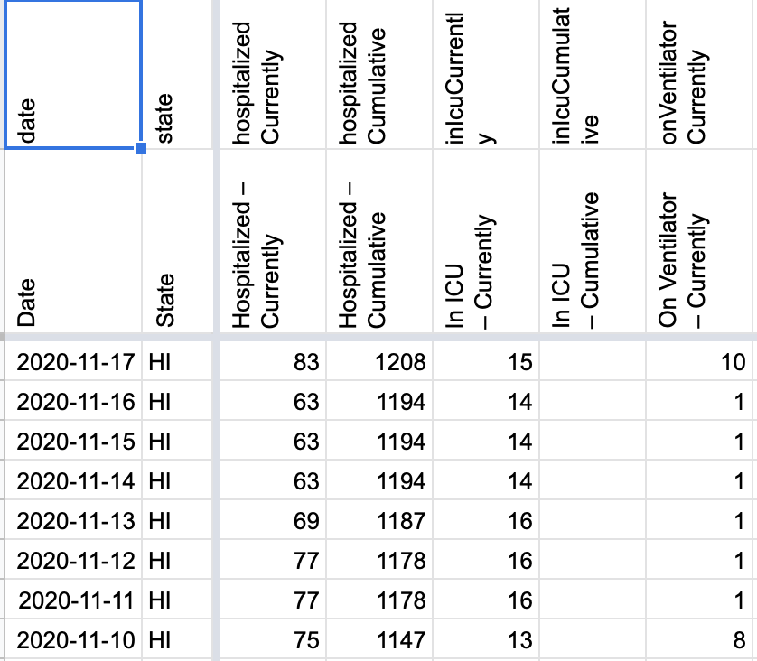
AFTER: 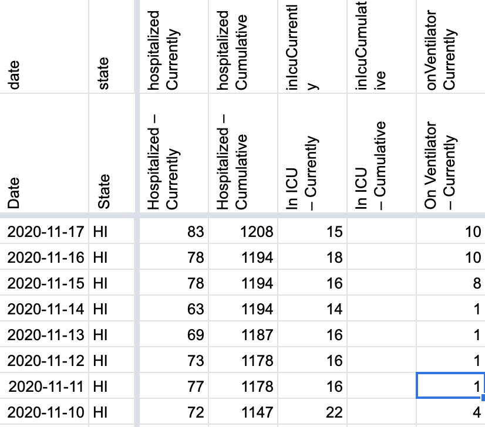
#958: [HI] Patch 11/16-11/17 timestamps
Issue number 958
hmhoffman opened this issue on November 18, 2020, 7:36 AM PST
State: HI
Dates affected: 11/16-11/17
Describe the issue: On 11/17 we discovered a new timestamp for HI, with "data as of" language, which is our preferred timestamp. This language has been on the page since 11/16, we should patch the timestamps for 11/17 and 11/16 according to this language.
Screenshot links: https://covid-tracking-project-data.s3.us-east-1.amazonaws.com/state_screenshots/HI/HI-quaternary-20201118-051843.png https://covid-tracking-project-data.s3.us-east-1.amazonaws.com/state_screenshots/HI/HI-quaternary-20201116-231931.png
Comments
BEFORE: 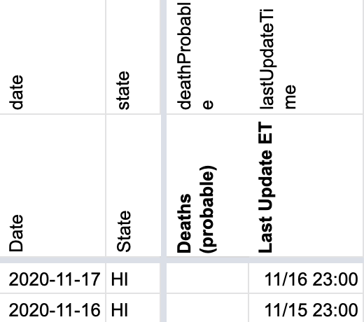
AFTER: 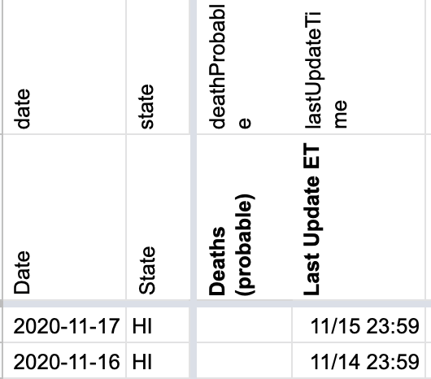
#934: [HI] remove cumulative hospitalization and ICU numebrs from old reporting
Issue number 934
space-buzzer opened this issue on November 6, 2020, 11:36 AM PST
Labels Data quality

Comments
#913: [HI] Patch 10/23 Timestamp
Issue number 913
hmhoffman opened this issue on October 26, 2020, 10:12 AM PDT
Labels Data quality
State: HI
Dates affected: 10/23
Describe the issue: On 10/23, the HI timestamp was input as 10/21, and it should have been 10/22. We should fix this mistake.
Comments
BEFORE: 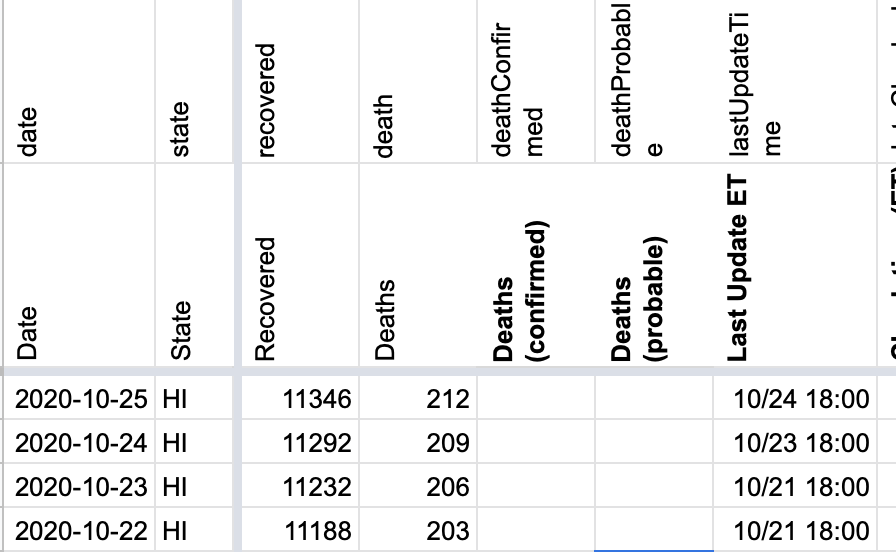
AFTER: 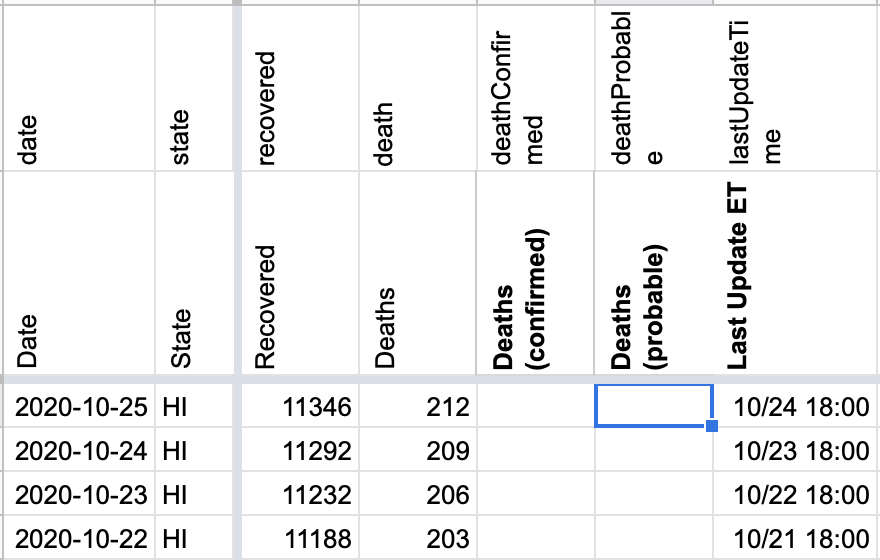
#892: [HI] Use the new encounters data from the state for "Total Test Encounter PCR" (and PCR positives)
Issue number 892
space-buzzer opened this issue on October 9, 2020, 10:21 AM PDT
Labels Data quality
HI started publishing PCR testing encounters on the dashboard
https://health.hawaii.gov/coronavirusdisease2019/what-you-should-know/current-situation-in-hawaii/#testing
And we should start using these numbers.
The new data includes a CSV download file with: New Positive Lab, Total Lab Encounters
For us, this change includes:
- Stop reporting Total PCR Tests (because this metric will no longer be available)
- Start reporting PCR Test Encounters
- Backfill PCR Test Encounters
- Start reporting + backfill positive PCR testing
Comments
Updated "Test Encounters PCR" and "Positive Tests PCR" from the files HI published on the dashboard yesterday (2020-10-07 1st day of posting testing encounters data).
#880: [HI] Backfilling confirmed/probable cases through 9/9 and updating Positive field
Issue number 880
the-daniel-lin opened this issue on October 1, 2020, 11:43 AM PDT
Labels Backfill Data quality Historical Data
State or US: Hawaii
Describe the problem On 9/9, HI began to release the number of probable cases (updated weekly). They also updated the annotation on their state page to be just confirmed cases.
We need to:
-
[x] Copy the current values in Positive to Positive Cases (PCR) from 9/9 onward and capture accordingly in DE
-
[x] Backfill Probable from "total probable cases" from secondary screenshots from 9/9 onward and capture accordingly in DE
-
[x] Add the backfilled Probable + Positive Cases (PCR) to get the new Positive field from 9/9 onward and capture accordingly in DE
Link to data source http://covid-tracking-project-data.s3-website.us-east-1.amazonaws.com/state_screenshots/HI/
Comments
BEFORE: 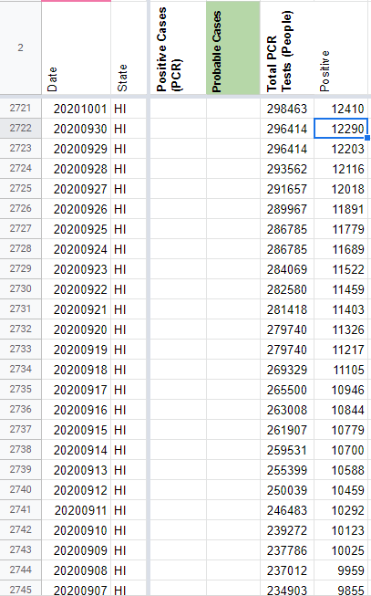
AFTER: 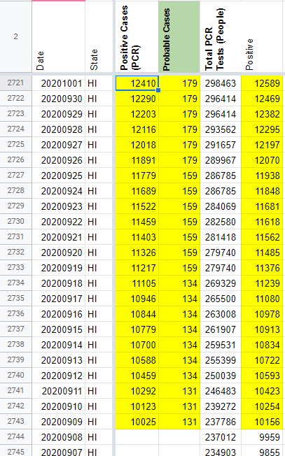
#761: [HI] Hospitalization Data for 8/13
Issue number 761
muamichali opened this issue on August 13, 2020, 6:05 PM PDT
Labels Data quality not stale
State or US: HI
Describe the problem Updates were provided after publishing the daily data
Link to data source
Lt Governor Josh's Instagram Account

Comments
This issue has been automatically marked as stale because it has not had recent activity. It will be closed if no further activity occurs. Thank you for your contributions!
This issue has been closed because it was stale for 15 days, and there was no further activity on it for 10 days. You can feel free to re-open it if the issue is important, and label it as "not stale."
#756: [HI] Test Data 7/27-28
Issue number 756
brianskli opened this issue on August 12, 2020, 6:16 PM PDT
Labels Historical Data stale
State or US: Hawaii
Describe the problem Suggested corrections to CTP's numbers from Jul 27 and 28 for Negative Tests and Total Tests from HI user based on state data.
| Date | New Tests | Cases | Negative | Pending | Hospitalized | Deaths | Total |
|---|---|---|---|---|---|---|---|
| Tue Jul 28 | 564 | 1,711 | 114,676 | N/A | 165 | 26 | 116,387 |
| Mon Jul 27 | 1,771 | 1,683 | 114,140 | N/A | 163 | 26 | 115,823 |
Link to data source https://hawaiicovid19.com/ https://experience.arcgis.com/experience/eb56a98b71324152a918e72d3ccdfc20/
Comments
BEFORE: 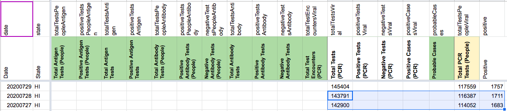
AFTER: 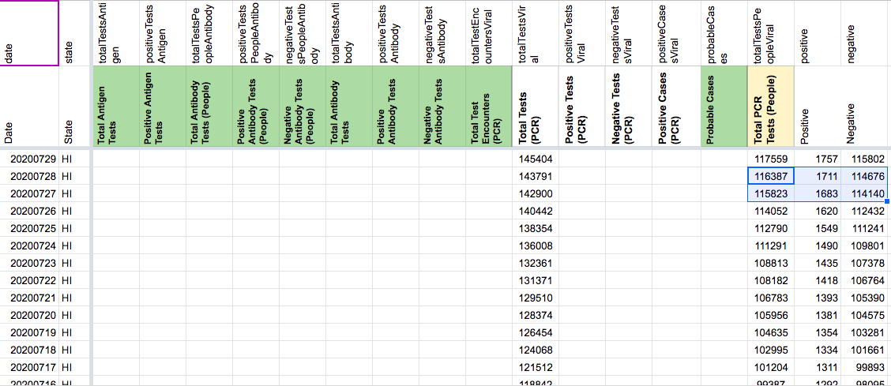
SAVED: 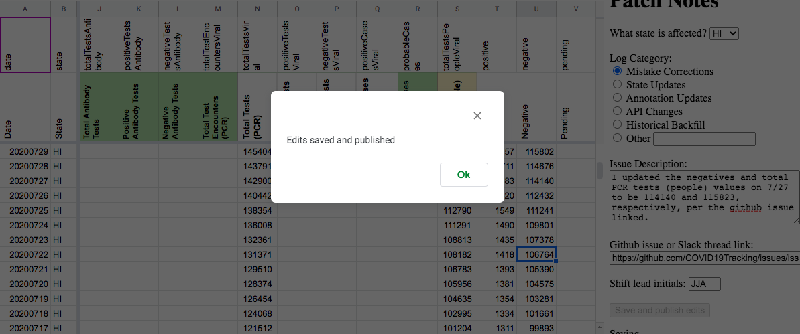
This issue has been automatically marked as stale because it has not had recent activity. It will be closed if no further activity occurs. Thank you for your contributions!
This issue has been closed because it was stale for 15 days, and there was no further activity on it for 10 days. You can feel free to re-open it if the issue is important, and label it as "not stale."
#753: [HI] Total PCR Tests (People) 5/13 - 5/22
Issue number 753
the-daniel-lin opened this issue on August 12, 2020, 7:52 AM PDT
Labels Backfill Historical Data not stale
State or US: Hawaii
Describe the problem On 5/23, we began reporting total testing values in Total Tests (PCR), switching from Total PCR Tests (People). On 6/8, we resumed reporting in Total PCR Tests (People) with a different source.
- From 5/13 - 5/22, the Total PCR Tests (People) values should be moved to the Total Tests (PCR) column
- HI has press releases with which we can back fill: https://health.hawaii.gov/news/covid-19-updates/
2. Using the Wayback Machine, we should be able to backfill Total PCR Tests (People) with this link: https://hawaiicovid19.com/
Comments
We have backfilled the "tests" wise data for HI on 10/9/2020 which makes this issue moot See https://github.com/COVID19Tracking/issues/issues/892
#737: [HI]Back fill current ICU numbers from the lt. governor's Instagram page
Issue number 737
muamichali opened this issue on August 5, 2020, 12:45 PM PDT
Labels Data quality
State or US: Hawaii
Describe the problem This data point is only reported on Instagram. We should back-fill from there
Link to data source 8/4 HOSP 138 ICU 15 VENT 10 8/3 HOSP 75 ICU 15 VENT 10 8/2 HOSP 75 ICU 15 VENT 10 7/31 HOSP 65 ICU 14 VENT 10 7/30 HOSP 61 ICU 11 VENT 9 https://www.instagram.com/p/CDX-wtKjo1v/?igshid=1ux0dry15wg4y


Comments
BEFORE 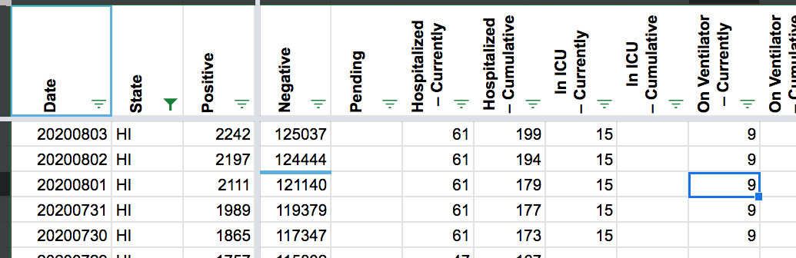
AFTER 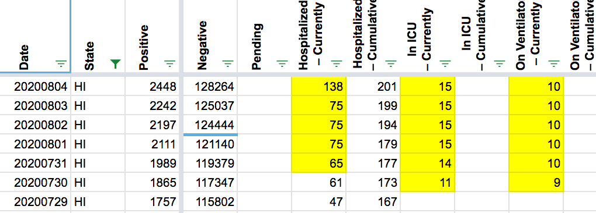
The data was released on Instagram after our publish shift time, so backfilling 8/5 hospitalization numbers with:
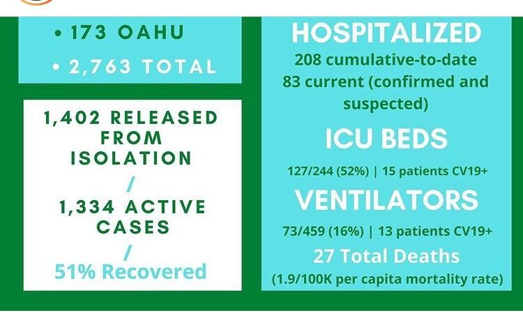
BEFORE:
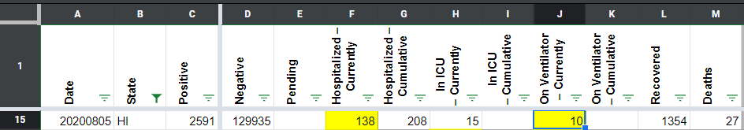
AFTER:
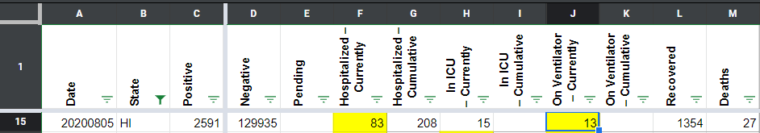
Changed in WS2 as well
BEFORE:
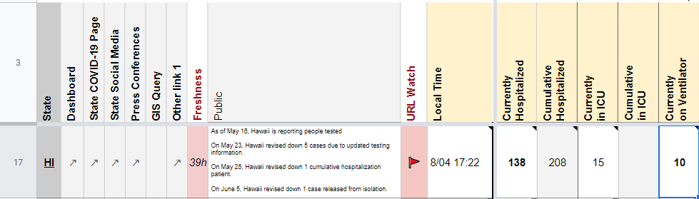
AFTER:
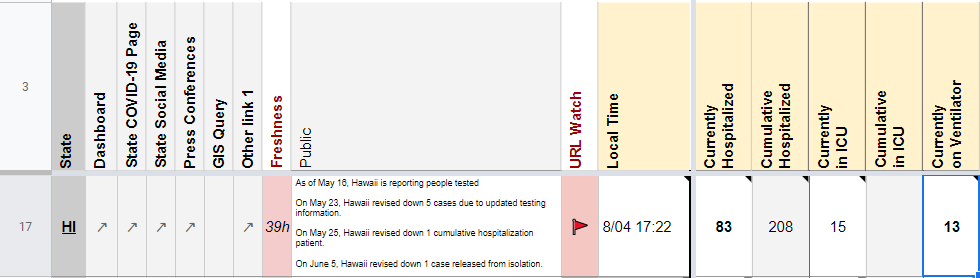
I am closing this @the-daniel-lin
#696: [HI] Incorrect negatives value 7/28
Issue number 696
the-daniel-lin opened this issue on July 29, 2020, 3:06 PM PDT
Labels Data quality Historical Data
State or US: Hawaii
Describe the problem
In the Negatives column, the entry for 7/28 was 114052-1620 which is the Total PCR Tests (People) value from 7/27 - an incorrect value also from 7/27 (from edit history digging)
We'll have to go check the historical numbers from those few days to see if the other values are correct.
Link to data source
From today's publication shift:

Comments
BEFORE: 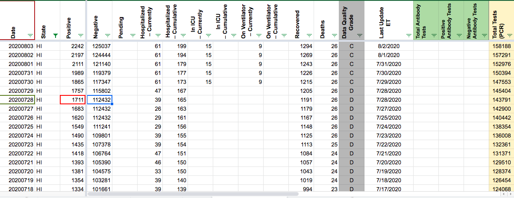
AFTER (7/28 --> (116387 - 1711)) 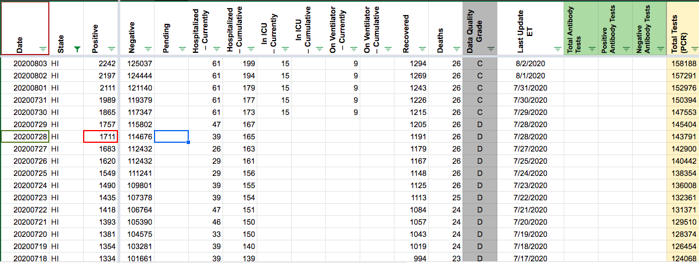
#670: [HI]Back-fill hospitalizations from official website news digest links
Issue number 670
muamichali opened this issue on July 24, 2020, 12:03 PM PDT
Labels Data quality
State or US: HI
Describe the problem Official source has a history of hospitalizations that CTP did not know about
Link to data source https://health.hawaii.gov/news/corona-virus/hawaii-covid-19-daily-news-digest-july-23-2020/ https://health.hawaii.gov/news/corona-virus/hawaii-covid-19-daily-news-digest-july-22-2020/ https://health.hawaii.gov/news/corona-virus/hawaii-covid-19-daily-news-digest-july-21-2020/ https://health.hawaii.gov/news/corona-virus/hawaii-covid-19-daily-news-digest-july-20-2020/ https://health.hawaii.gov/news/corona-virus/hawaii-covid-19-daily-news-digest-july-17-2020/ https://health.hawaii.gov/news/corona-virus/hawaii-covid-19-daily-news-digest-july-16-2020/ https://health.hawaii.gov/news/corona-virus/hawaii-covid-19-daily-news-digest-july-15-2020/ https://health.hawaii.gov/news/corona-virus/hawaii-covid-19-daily-news-digest-july-14-2020/
(as well as previous days)
Comments
Updated values from 7/14 through 7/23 (carrying over the 7/17 value until the 20th)
| Date | Currently Hospitalized |
|---|---|
| 20200723 | 39 |
| 20200722 | 47 |
| 20200721 | 46 |
| 20200720 | 33 |
| 20200719 | 39 |
| 20200718 | 39 |
| 20200717 | 39 |
| 20200716 | 40 |
| 20200715 | 31 |
| 20200714 | 23 |
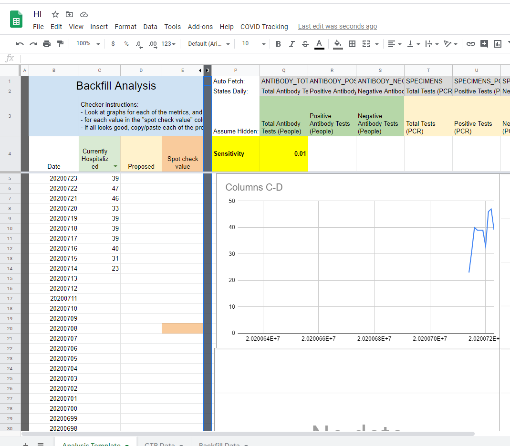
#571: [HI] PCL Historicals and WS2
Issue number 571
jesseandersonumd opened this issue on July 3, 2020, 7:28 AM PDT
Labels Backfill PCL/SVP Historicals not stale
Hawaii's positive cases appear to lump together probables and confirmed, but WS2 reports this value under 'positive cases (PCR)'. We should delete this value and only put it in 'Positive Cases (People, confirmed + probable)'
Comments
Same goes for PCR positive/negative test results. Since we use the same source data to calculate them
BEFORE
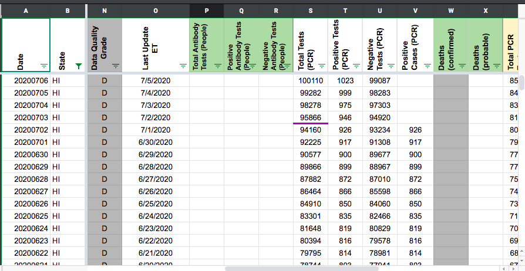
AFTER - Corrected historicals for cases by removing values in positive cases (PCR) and leaving the values in positive (confirmed and probable) only.
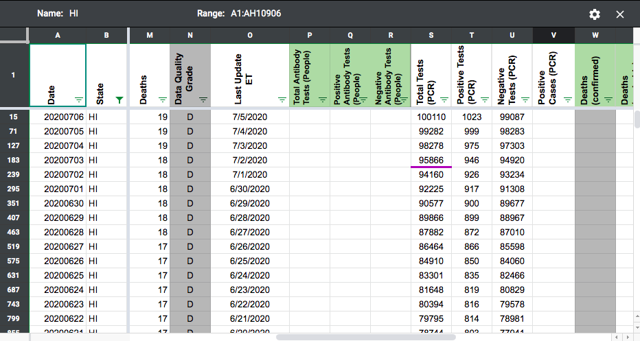
BEFORE - 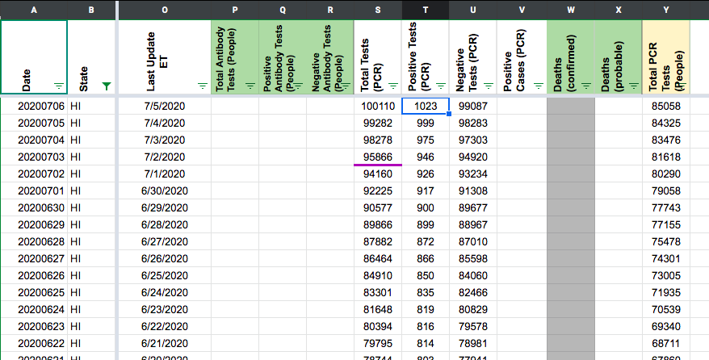
AFTER - removed positive tests (PCR) and negative tests (PCR) values because both of these values are calculated based on positive cases (PCR), as noted by Rebma
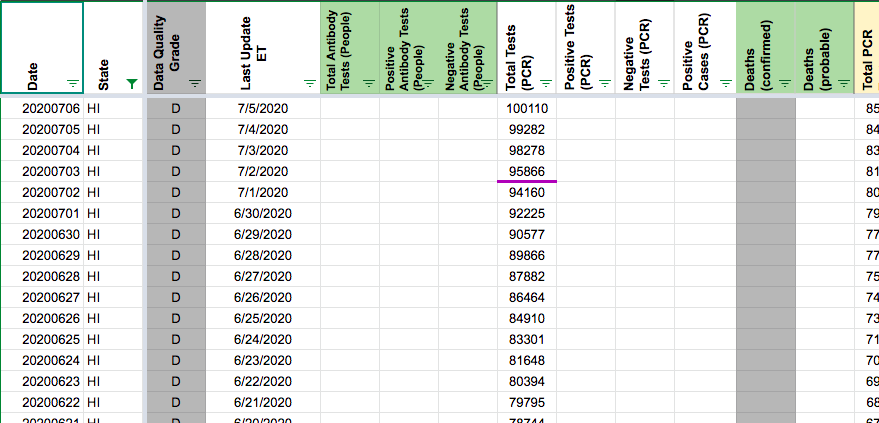
#472: [HI Historicals] Total tests need to be adjusted to refelct people tested
Issue number 472
muamichali opened this issue on June 1, 2020, 1:39 PM PDT
Labels Data quality stale
https://covid-tracking.slack.com/archives/CUQ4MMTPD/p1591043321460800
Comments
This issue has been automatically marked as stale because it has not had recent activity. It will be closed if no further activity occurs. Thank you for your contributions!
This issue has been closed because it was stale for 15 days, and there was no further activity on it for 10 days. You can feel free to re-open it if the issue is important, and label it as "not stale."
#272: [HI] Hawaii positive increase on 4/22 is a negative number
Issue number 272
loglow opened this issue on April 22, 2020, 11:54 PM PDT
Labels Backfill Historical Data
At present, the data returned by:
https://covidtracking.com/api/v1/states/daily.json
Shows the following value for state = HI on date = 20200422:
"positiveIncrease":-2
I have not checked for the presence of any other negative values, but this is the only one I've come across so far.
Comments
I found another one.
WA on 4/20 = -12
I got curious and wrote a tool to find errors like this: https://www.covidcharts.com/data_check.html
Entirely client-side JS, so feel free to re-use any of the code.
I got curious and wrote a tool to find errors like this: https://www.covidcharts.com/data_check.html
Entirely client-side JS, so feel free to re-use any of the code.
This is fantastic. Great work @loglow. I've been visually grepping through the same, but using the CSV datasource for https://c19.dev.
This issue has been automatically marked as stale because it has not had recent activity. It will be closed if no further activity occurs. Thank you for your contributions!
This issue has been closed because it was stale for 15 days, and there was no further activity on it for 10 days. You can feel free to re-open it if the issue is important, and label it as "not stale."
"There's a potential corruption of your Confirmed Positives historical data for several states. The data as reported should be cumulative amounts i.e. either increasing or constant - but in several places there have been new spikes added to past data and occasional dips, both producing negative Daily Positives after day-to-day subtraction. This is a recent development. I compared the current report with one ending on May 31 - and the discrepancies are (format: State, date new/old values or a multiday up-and-down sequence): ... 5) HI, 4/21-22, 584, 582...." Instead of 584, 582, the values should be 584, 586.
Screenshot from state site on 4/21: 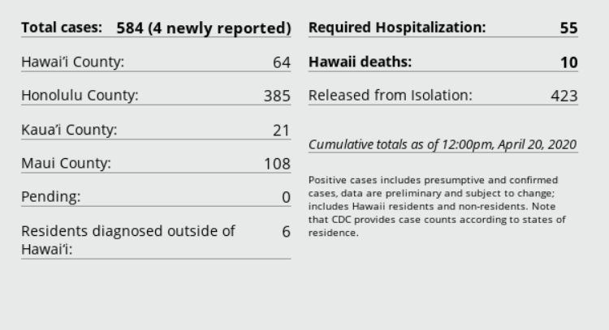
Screenshot from state site on 4/22: 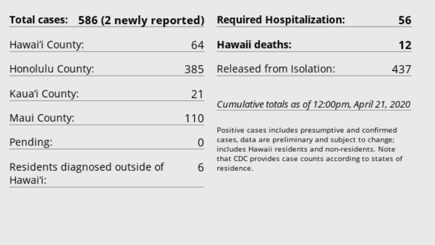
***Our data for HI uses numbers "as of" the previous day according to the site
Independently checked the screenshots. The 6pm HI screenshot for 4/22 says 592 cases, but the surrounding numbers indicate the 12:00 screenshot matches what data entry was doing so I'm using the 12:00 number, 586.
Before: 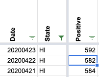
After: 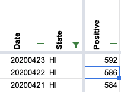
Regarding WA on 4/20, there's no longer a decline in cases on that day. I think that was probably fixed as part of a previous backfill of Washington historical data.
#99: HI: Pending tests clarification
Issue number 99
whodaguy opened this issue on March 31, 2020, 8:50 PM PDT
Labels State Notes
On the Hawaii Department of Health website sourced for covidtracking data, the category "Pending" does not refer to people in Hawaii who have been swabbed and are still awaiting test results. It means people who have tested positive but whose county of residence has not yet been confirmed.
Just FYI.
Comments
Thank you, we have made a note of that for future updates & are updating the past entries.
Inaccurate pending data had been input for 18 - 21 March, 27 March - 02 April. 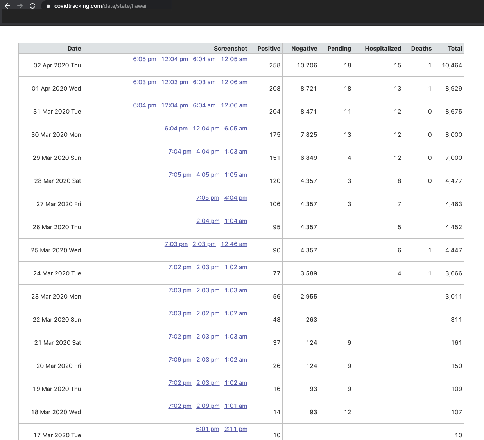
https://health.hawaii.gov/coronavirusdisease2019/ shows that Pending is pending county assignment, not pending test results.
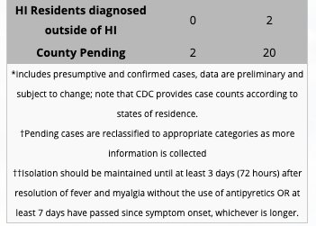
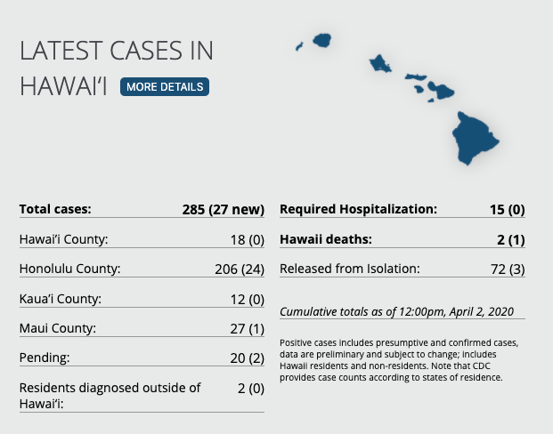
Removed the 'Pending' values
previously 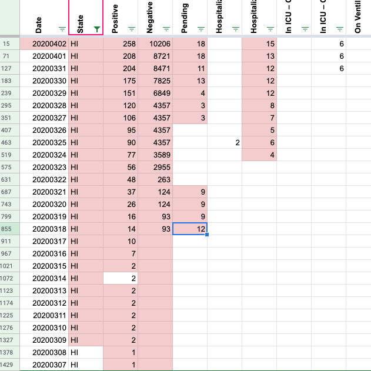
updated 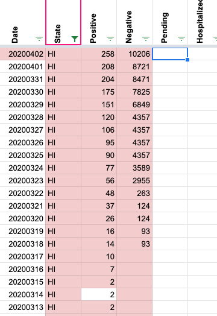
Rows edited: 310 HI 2021-02-04 deathConfirmed: 416 (was None) HI 2021-02-03 deathConfirmed: 414 (was None) HI 2021-02-02 deathConfirmed: 410 (was None) HI 2021-02-01 deathConfirmed: 410 (was None) HI 2021-01-31 deathConfirmed: 410 (was None) HI 2021-01-30 deathConfirmed: 407 (was None) HI 2021-01-29 deathConfirmed: 407 (was None) HI 2021-01-28 deathConfirmed: 406 (was None) HI 2021-01-27 deathConfirmed: 404 (was None) HI 2021-01-26 deathConfirmed: 401 (was None) HI 2021-01-25 deathConfirmed: 342 (was None) HI 2021-01-24 deathConfirmed: 342 (was None) HI 2021-01-23 deathConfirmed: 336 (was None) HI 2021-01-22 deathConfirmed: 332 (was None) HI 2021-01-21 deathConfirmed: 328 (was None) HI 2021-01-20 deathConfirmed: 325 (was None) HI 2021-01-19 deathConfirmed: 324 (was None) HI 2021-01-18 deathConfirmed: 322 (was None) HI 2021-01-17 deathConfirmed: 322 (was None) HI 2021-01-16 deathConfirmed: 320 (was None) HI 2021-01-15 deathConfirmed: 318 (was None) HI 2021-01-14 deathConfirmed: 318 (was None) HI 2021-01-13 deathConfirmed: 312 (was None) HI 2021-01-12 deathConfirmed: 309 (was None) HI 2021-01-11 deathConfirmed: 309 (was None) HI 2021-01-10 deathConfirmed: 309 (was None) HI 2021-01-09 deathConfirmed: 307 (was None) HI 2021-01-08 deathConfirmed: 303 (was None) HI 2021-01-07 deathConfirmed: 299 (was None) HI 2021-01-06 deathConfirmed: 299 (was None) HI 2021-01-05 deathConfirmed: 289 (was None) HI 2021-01-04 deathConfirmed: 289 (was None) HI 2021-01-03 deathConfirmed: 289 (was None) HI 2021-01-02 deathConfirmed: 289 (was None) HI 2021-01-01 deathConfirmed: 289 (was None) HI 2020-12-31 deathConfirmed: 288 (was None) HI 2020-12-30 deathConfirmed: 285 (was None) HI 2020-12-29 deathConfirmed: 285 (was None) HI 2020-12-28 deathConfirmed: 285 (was None) HI 2020-12-27 deathConfirmed: 285 (was None) HI 2020-12-26 deathConfirmed: 285 (was None) HI 2020-12-25 deathConfirmed: 285 (was None) HI 2020-12-24 deathConfirmed: 285 (was None) HI 2020-12-23 deathConfirmed: 285 (was None) HI 2020-12-22 deathConfirmed: 282 (was None) HI 2020-12-21 deathConfirmed: 282 (was None) HI 2020-12-20 deathConfirmed: 282 (was None) HI 2020-12-19 deathConfirmed: 281 (was None) HI 2020-12-18 deathConfirmed: 281 (was None) HI 2020-12-17 deathConfirmed: 280 (was None) HI 2020-12-16 deathConfirmed: 278 (was None) HI 2020-12-15 deathConfirmed: 274 (was None) HI 2020-12-14 deathConfirmed: 274 (was None) HI 2020-12-13 deathConfirmed: 274 (was None) HI 2020-12-12 deathConfirmed: 271 (was None) HI 2020-12-11 deathConfirmed: 269 (was None) HI 2020-12-10 deathConfirmed: 268 (was None) HI 2020-12-09 deathConfirmed: 266 (was None) HI 2020-12-08 deathConfirmed: 262 (was None) HI 2020-12-07 deathConfirmed: 262 (was None) HI 2020-12-06 deathConfirmed: 262 (was None) HI 2020-12-05 deathConfirmed: 261 (was None) HI 2020-12-04 deathConfirmed: 256 (was None) HI 2020-12-03 deathConfirmed: 246 (was None) HI 2020-12-02 deathConfirmed: 244 (was None) HI 2020-12-01 deathConfirmed: 244 (was None) HI 2020-11-30 deathConfirmed: 244 (was None) HI 2020-11-29 deathConfirmed: 244 (was None) HI 2020-11-28 deathConfirmed: 240 (was None) HI 2020-11-27 deathConfirmed: 240 (was None) HI 2020-11-26 deathConfirmed: 237 (was None) HI 2020-11-25 deathConfirmed: 235 (was None) HI 2020-11-24 deathConfirmed: 233 (was None) HI 2020-11-23 deathConfirmed: 233 (was None) HI 2020-11-22 deathConfirmed: 233 (was None) HI 2020-11-21 deathConfirmed: 231 (was None) HI 2020-11-20 deathConfirmed: 224 (was None) HI 2020-11-19 deathConfirmed: 223 (was None) HI 2020-11-18 deathConfirmed: 223 (was None) HI 2020-11-17 deathConfirmed: 222 (was None) HI 2020-11-16 deathConfirmed: 222 (was None) HI 2020-11-15 deathConfirmed: 222 (was None) HI 2020-11-14 deathConfirmed: 222 (was None) HI 2020-11-13 deathConfirmed: 222 (was None) HI 2020-11-12 deathConfirmed: 222 (was None) HI 2020-11-11 deathConfirmed: 222 (was None) HI 2020-11-10 deathConfirmed: 221 (was None) HI 2020-11-09 deathConfirmed: 221 (was None) HI 2020-11-08 deathConfirmed: 220 (was None) HI 2020-11-07 deathConfirmed: 219 (was None) HI 2020-11-06 deathConfirmed: 219 (was None) HI 2020-11-05 deathConfirmed: 219 (was None) HI 2020-11-04 deathConfirmed: 219 (was None) HI 2020-11-03 deathConfirmed: 219 (was None) HI 2020-11-02 deathConfirmed: 219 (was None) HI 2020-11-01 deathConfirmed: 219 (was None) HI 2020-10-31 deathConfirmed: 216 (was None) HI 2020-10-30 deathConfirmed: 215 (was None) HI 2020-10-29 deathConfirmed: 213 (was None) HI 2020-10-28 deathConfirmed: 215 (was None) HI 2020-10-27 deathConfirmed: 212 (was None) HI 2020-10-26 deathConfirmed: 212 (was None) HI 2020-10-25 deathConfirmed: 212 (was None) HI 2020-10-24 deathConfirmed: 209 (was None) HI 2020-10-23 deathConfirmed: 206 (was None) HI 2020-10-22 deathConfirmed: 203 (was None) HI 2020-10-21 deathConfirmed: 189 (was None) HI 2020-10-20 deathConfirmed: 187 (was None) HI 2020-10-19 deathConfirmed: 187 (was None) HI 2020-10-18 deathConfirmed: 186 (was None) HI 2020-10-17 deathConfirmed: 185 (was None) HI 2020-10-16 deathConfirmed: 184 (was None) HI 2020-10-15 deathConfirmed: 183 (was None) HI 2020-10-14 deathConfirmed: 173 (was None) HI 2020-10-13 deathConfirmed: 169 (was None) HI 2020-10-12 deathConfirmed: 169 (was None) HI 2020-10-11 deathConfirmed: 168 (was None) HI 2020-10-10 deathConfirmed: 166 (was None) HI 2020-10-09 deathConfirmed: 164 (was None) HI 2020-10-08 deathConfirmed: 163 (was None) HI 2020-10-07 deathConfirmed: 160 (was None) HI 2020-10-06 deathConfirmed: 157 (was None) HI 2020-10-05 deathConfirmed: 156 (was None) HI 2020-10-04 deathConfirmed: 153 (was None) HI 2020-10-03 deathConfirmed: 142 (was None) HI 2020-10-02 deathConfirmed: 139 (was None) HI 2020-10-01 deathConfirmed: 136 (was None) HI 2020-09-30 deathConfirmed: 132 (was None) HI 2020-09-29 deathConfirmed: 132 (was None) HI 2020-09-28 deathConfirmed: 132 (was None) HI 2020-09-27 deathConfirmed: 131 (was None) HI 2020-09-26 deathConfirmed: 127 (was None) HI 2020-09-25 deathConfirmed: 124 (was None) HI 2020-09-24 deathConfirmed: 122 (was None) HI 2020-09-23 deathConfirmed: 120 (was None) HI 2020-09-22 deathConfirmed: 120 (was None) HI 2020-09-21 deathConfirmed: 120 (was None) HI 2020-09-20 deathConfirmed: 120 (was None) HI 2020-09-19 deathConfirmed: 120 (was None) HI 2020-09-18 deathConfirmed: 107 (was None) HI 2020-09-17 deathConfirmed: 103 (was None) HI 2020-09-16 deathConfirmed: 100 (was None) HI 2020-09-15 deathConfirmed: 99 (was None) HI 2020-09-14 deathConfirmed: 99 (was None) HI 2020-09-13 deathConfirmed: 97 (was None) HI 2020-09-12 deathConfirmed: 96 (was None) HI 2020-09-11 deathConfirmed: 94 (was None) HI 2020-09-10 deathConfirmed: 91 (was None) HI 2020-09-09 deathConfirmed: 88 (was None) HI 2020-09-08 deathConfirmed: 86 (was None) HI 2020-09-07 deathConfirmed: 85 (was None) HI 2020-09-06 deathConfirmed: 84 (was None) HI 2020-09-05 deathConfirmed: 81 (was None) HI 2020-09-04 deathConfirmed: 79 (was None) HI 2020-09-03 deathConfirmed: 75 (was None) HI 2020-09-02 deathConfirmed: 74 (was None) HI 2020-09-01 deathConfirmed: 70 (was None) HI 2020-08-31 deathConfirmed: 63 (was None) HI 2020-08-30 deathConfirmed: 62 (was None) HI 2020-08-29 deathConfirmed: 59 (was None) HI 2020-08-28 deathConfirmed: 55 (was None) HI 2020-08-27 deathConfirmed: 51 (was None) HI 2020-08-26 deathConfirmed: 49 (was None) HI 2020-08-25 deathConfirmed: 49 (was None) HI 2020-08-24 deathConfirmed: 47 (was None) HI 2020-08-23 deathConfirmed: 47 (was None) HI 2020-08-22 deathConfirmed: 46 (was None) HI 2020-08-21 deathConfirmed: 45 (was None) HI 2020-08-20 deathConfirmed: 45 (was None) HI 2020-08-19 deathConfirmed: 42 (was None) HI 2020-08-18 deathConfirmed: 40 (was None) HI 2020-08-17 deathConfirmed: 40 (was None) HI 2020-08-16 deathConfirmed: 40 (was None) HI 2020-08-15 deathConfirmed: 40 (was None) HI 2020-08-14 deathConfirmed: 40 (was None) HI 2020-08-13 deathConfirmed: 40 (was None) HI 2020-08-12 deathConfirmed: 38 (was None) HI 2020-08-11 deathConfirmed: 34 (was None) HI 2020-08-10 deathConfirmed: 31 (was None) HI 2020-08-09 deathConfirmed: 31 (was None) HI 2020-08-08 deathConfirmed: 31 (was None) HI 2020-08-07 deathConfirmed: 29 (was None) HI 2020-08-06 deathConfirmed: 27 (was None) HI 2020-08-05 deathConfirmed: 27 (was None) HI 2020-08-04 deathConfirmed: 26 (was None) HI 2020-08-03 deathConfirmed: 26 (was None) HI 2020-08-02 deathConfirmed: 26 (was None) HI 2020-08-01 deathConfirmed: 26 (was None) HI 2020-07-31 deathConfirmed: 26 (was None) HI 2020-07-30 deathConfirmed: 26 (was None) HI 2020-07-29 deathConfirmed: 26 (was None) HI 2020-07-28 deathConfirmed: 26 (was None) HI 2020-07-27 deathConfirmed: 26 (was None) HI 2020-07-26 deathConfirmed: 26 (was None) HI 2020-07-25 deathConfirmed: 26 (was None) HI 2020-07-24 deathConfirmed: 26 (was None) HI 2020-07-23 deathConfirmed: 25 (was None) HI 2020-07-22 deathConfirmed: 24 (was None) HI 2020-07-21 deathConfirmed: 24 (was None) HI 2020-07-20 deathConfirmed: 24 (was None) HI 2020-07-19 deathConfirmed: 24 (was None) HI 2020-07-18 deathConfirmed: 23 (was None) HI 2020-07-17 deathConfirmed: 22 (was None) HI 2020-07-16 deathConfirmed: 22 (was None) HI 2020-07-15 deathConfirmed: 22 (was None) HI 2020-07-14 deathConfirmed: 22 (was None) HI 2020-07-13 deathConfirmed: 19 (was None) HI 2020-07-12 deathConfirmed: 19 (was None) HI 2020-07-11 deathConfirmed: 19 (was None) HI 2020-07-10 deathConfirmed: 19 (was None) HI 2020-07-09 deathConfirmed: 19 (was None) HI 2020-07-08 deathConfirmed: 19 (was None) HI 2020-07-07 deathConfirmed: 19 (was None) HI 2020-07-06 deathConfirmed: 19 (was None) HI 2020-07-05 deathConfirmed: 19 (was None) HI 2020-07-04 deathConfirmed: 19 (was None) HI 2020-07-03 deathConfirmed: 18 (was None) HI 2020-07-02 deathConfirmed: 18 (was None) HI 2020-07-01 deathConfirmed: 18 (was None) HI 2020-06-30 deathConfirmed: 18 (was None) HI 2020-06-29 deathConfirmed: 18 (was None) HI 2020-06-28 deathConfirmed: 18 (was None) HI 2020-06-27 deathConfirmed: 17 (was None) HI 2020-06-26 deathConfirmed: 17 (was None) HI 2020-06-25 deathConfirmed: 17 (was None) HI 2020-06-24 deathConfirmed: 17 (was None) HI 2020-06-23 deathConfirmed: 17 (was None) HI 2020-06-22 deathConfirmed: 17 (was None) HI 2020-06-21 deathConfirmed: 17 (was None) HI 2020-06-20 deathConfirmed: 17 (was None) HI 2020-06-19 deathConfirmed: 17 (was None) HI 2020-06-18 deathConfirmed: 17 (was None) HI 2020-06-17 deathConfirmed: 17 (was None) HI 2020-06-16 deathConfirmed: 17 (was None) HI 2020-06-15 deathConfirmed: 17 (was None) HI 2020-06-14 deathConfirmed: 17 (was None) HI 2020-06-13 deathConfirmed: 17 (was None) HI 2020-06-12 deathConfirmed: 17 (was None) HI 2020-06-11 deathConfirmed: 17 (was None) HI 2020-06-10 deathConfirmed: 17 (was None) HI 2020-06-09 deathConfirmed: 17 (was None) HI 2020-06-08 deathConfirmed: 17 (was None) HI 2020-06-07 deathConfirmed: 17 (was None) HI 2020-06-06 deathConfirmed: 17 (was None) HI 2020-06-05 deathConfirmed: 17 (was None) HI 2020-06-04 deathConfirmed: 17 (was None) HI 2020-06-03 deathConfirmed: 17 (was None) HI 2020-06-02 deathConfirmed: 17 (was None) HI 2020-06-01 deathConfirmed: 17 (was None) HI 2020-05-31 deathConfirmed: 17 (was None) HI 2020-05-30 deathConfirmed: 17 (was None) HI 2020-05-29 deathConfirmed: 17 (was None) HI 2020-05-28 deathConfirmed: 17 (was None) HI 2020-05-27 deathConfirmed: 17 (was None) HI 2020-05-26 deathConfirmed: 17 (was None) HI 2020-05-25 deathConfirmed: 17 (was None) HI 2020-05-24 deathConfirmed: 17 (was None) HI 2020-05-23 deathConfirmed: 17 (was None) HI 2020-05-22 deathConfirmed: 17 (was None) HI 2020-05-21 deathConfirmed: 17 (was None) HI 2020-05-20 deathConfirmed: 17 (was None) HI 2020-05-19 deathConfirmed: 17 (was None) HI 2020-05-18 deathConfirmed: 17 (was None) HI 2020-05-17 deathConfirmed: 17 (was None) HI 2020-05-16 deathConfirmed: 17 (was None) HI 2020-05-15 deathConfirmed: 17 (was None) HI 2020-05-14 deathConfirmed: 17 (was None) HI 2020-05-13 deathConfirmed: 17 (was None) HI 2020-05-12 deathConfirmed: 17 (was None) HI 2020-05-11 deathConfirmed: 17 (was None) HI 2020-05-10 deathConfirmed: 17 (was None) HI 2020-05-09 deathConfirmed: 17 (was None) HI 2020-05-08 deathConfirmed: 17 (was None) HI 2020-05-07 deathConfirmed: 17 (was None) HI 2020-05-06 deathConfirmed: 17 (was None) HI 2020-05-05 deathConfirmed: 17 (was None) HI 2020-05-04 deathConfirmed: 17 (was None) HI 2020-05-03 deathConfirmed: 16 (was None) HI 2020-05-02 deathConfirmed: 16 (was None) HI 2020-05-01 deathConfirmed: 16 (was None) HI 2020-04-30 deathConfirmed: 16 (was None) HI 2020-04-29 deathConfirmed: 16 (was None) HI 2020-04-28 deathConfirmed: 16 (was None) HI 2020-04-27 deathConfirmed: 14 (was None) HI 2020-04-26 deathConfirmed: 14 (was None) HI 2020-04-25 deathConfirmed: 13 (was None) HI 2020-04-24 deathConfirmed: 12 (was None) HI 2020-04-23 deathConfirmed: 12 (was None) HI 2020-04-22 deathConfirmed: 12 (was None) HI 2020-04-21 deathConfirmed: 10 (was None) HI 2020-04-20 deathConfirmed: 10 (was None) HI 2020-04-19 deathConfirmed: 9 (was None) HI 2020-04-18 deathConfirmed: 9 (was None) HI 2020-04-17 deathConfirmed: 9 (was None) HI 2020-04-16 deathConfirmed: 9 (was None) HI 2020-04-15 deathConfirmed: 9 (was None) HI 2020-04-14 deathConfirmed: 9 (was None) HI 2020-04-13 deathConfirmed: 9 (was None) HI 2020-04-12 deathConfirmed: 8 (was None) HI 2020-04-11 deathConfirmed: 8 (was None) HI 2020-04-10 deathConfirmed: 6 (was None) HI 2020-04-09 deathConfirmed: 5 (was None) HI 2020-04-08 deathConfirmed: 5 (was None) HI 2020-04-07 deathConfirmed: 5 (was None) HI 2020-04-06 deathConfirmed: 4 (was None) HI 2020-04-05 deathConfirmed: 4 (was None) HI 2020-04-04 deathConfirmed: 3 (was None) HI 2020-04-03 deathConfirmed: 2 (was None) HI 2020-04-02 deathConfirmed: 1 (was None) HI 2020-04-01 deathConfirmed: 1 (was None)